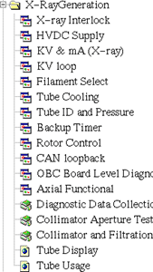
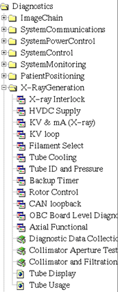

Proprietary to General Electric
Direction 5114045-800, Rev# 10
LightSpeed 4.X Service Information (Advanced)
Proprietary to General Electric |
Purpose: To describe available tools for isolating problems in the HV subsystem.
Illustration 1: Diagnostics List (Advanced)

It starts at the Service Desktop Manager with the selection of Diagnostics. From there, X-Ray Generation is selected.
Illustration 2: Troubleshooting: X-ray Generation List

This GUI links the user to all OBC functional tests, which are described in this document. The GUI was launched from the Service Desktop illustrated above.
Click on the following links to access the individual diagnostic procedures: